natural
自然文本

ARMSX2 Metal 4×，新 ISO 冷启动；样例仅替换运行时文本。点击截图查看完整原图。
自然文本
“ZGMF-X10A自由高达…… 是两年前地球与PLANT 交战时扎夫特制造的机体。”
“ZGMF-X42S命运高达、 ZGMF-X666S传说高达……”
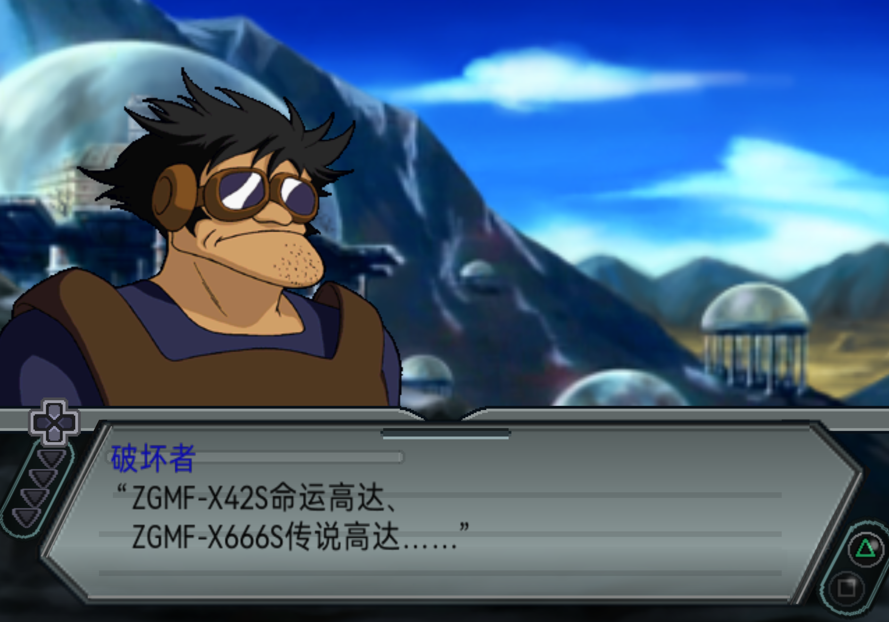
“然后，游戏中按R1、 R2、L1、L2、START、 SELECT（长按）键……”
“那个东西…… 难道是《Evidence 01》吗？”
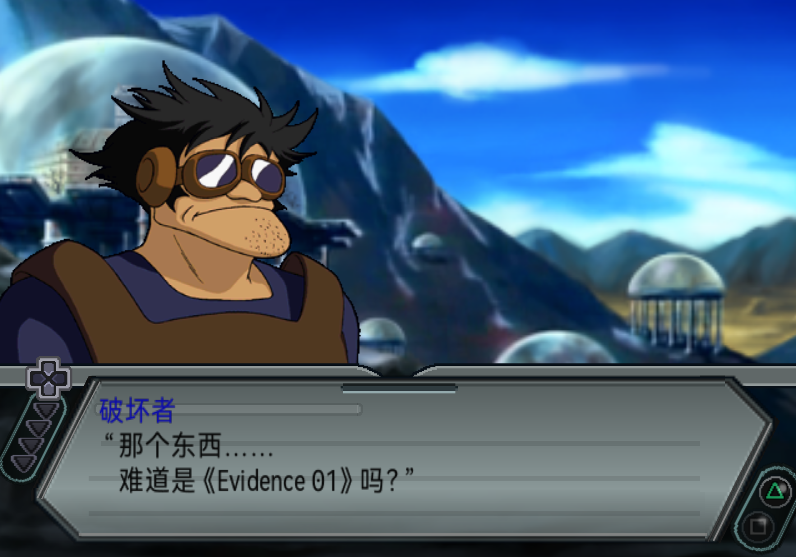
“0123456789、12.5毫米CIWS与RX-78 AaBbXYZxyz与Hgypqj，确认？”
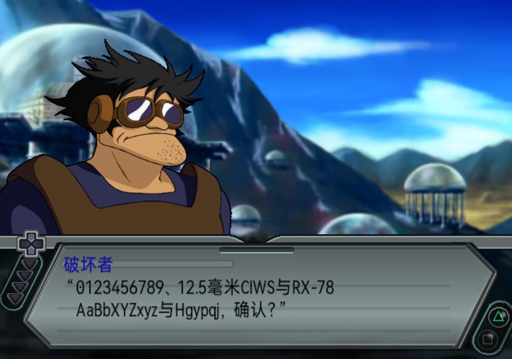
“天地日月田由甲申中， 距离说达到高处，出击说明。 这场战斗是黑历史的重演吗？”
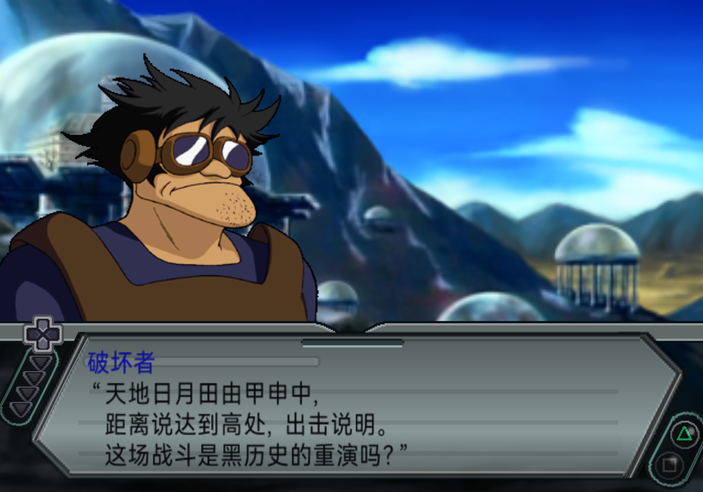
“THE CRUSHER说：Let's go！ Side 3距离1.5km，确认目标。 RX-78-2与MS-013准备出击。”
“0123456789、12.5毫米CIWS。 AaBbXYZxyz与Hgypqj，确认？ （上、下）【出击】《记录》……”
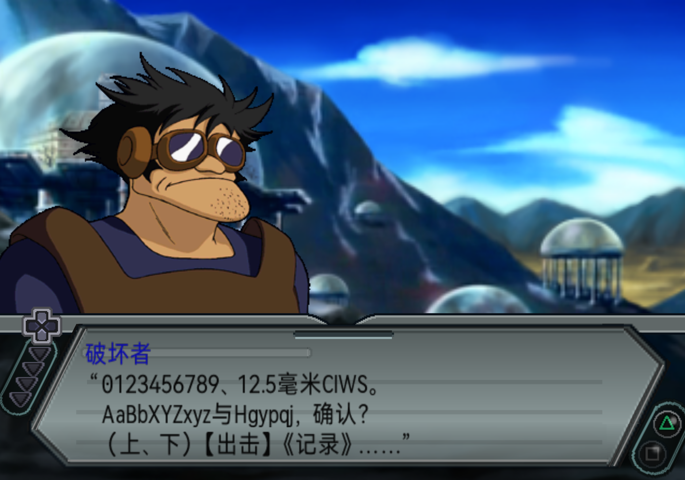
这场战斗是黑历史的重演吗我们还有希望在前方 天历吗说距离一二三上下大小口日月田由甲申中 这场战斗是黑历史的重演吗我们还有希望在前方
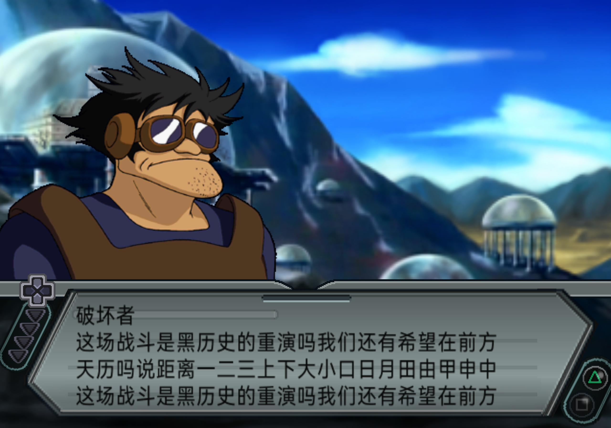
自然文本
天地日月田由甲申中， 距离说达到高处，出击说明。 这场战斗是黑历史的重演吗？
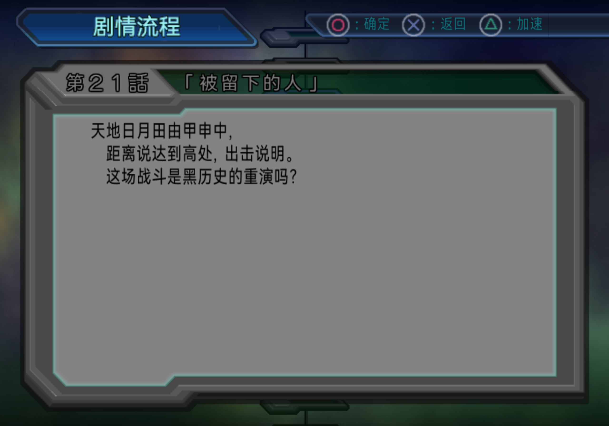
THE CRUSHER说：Let's go！ Side 3距离1.5km，确认目标。 RX-78-2与MS-013准备出击。
0123456789、12.5毫米CIWS。 AaBbXYZxyz与Hgypqj，确认？ （上、下）【出击】《记录》……
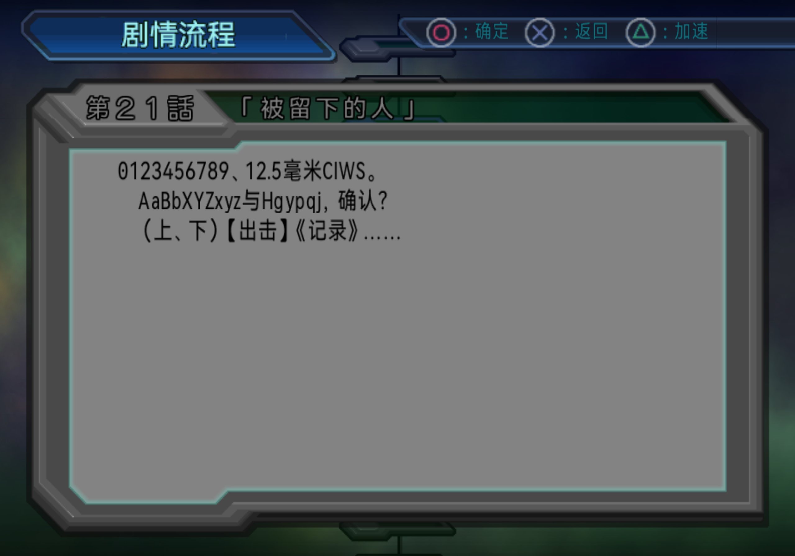
新地球联邦将生活在宇宙中的人类视为敌人，宣 布对PLANT与月之民采取敌对立场。PLANT与 月之民起初都希望通过对话解决问题，但面对新联 邦军的进攻，最终不得不还击。
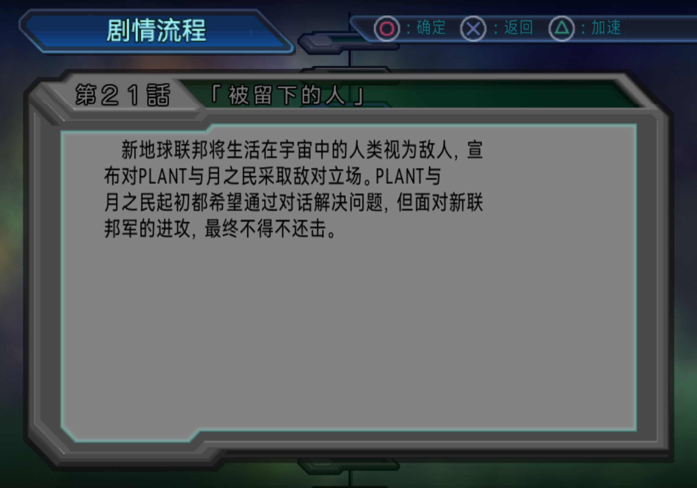
自然文本

“天地日月田由甲申中， 距离说达到高处，出击说明。 这场战斗是黑历史的重演吗？” “天地日月田由甲申中， 距离说达到高处，出击说明。 这场战斗是黑历史的重演吗？” “天地日月田由甲申中， 距离说达到高处，出击说明。 这场战斗是黑历史的重演吗？” “天地日月田由甲申中， 距离说达到高处，出击说明。 这场战斗是黑历史的重演吗？”
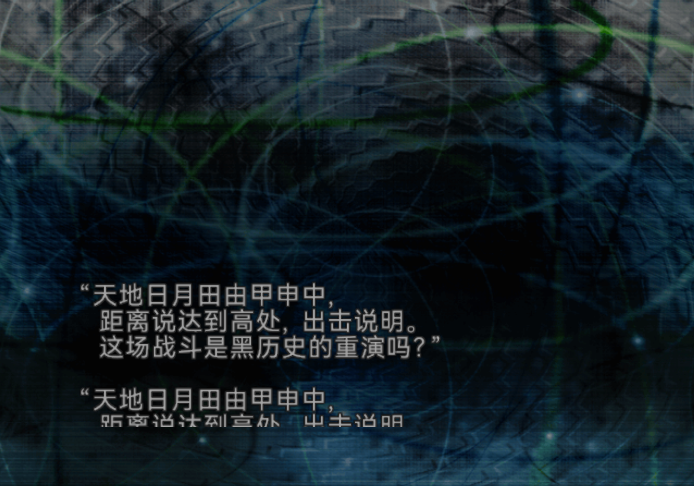
“THE CRUSHER说：Let's go！ Side 3距离1.5km，确认目标。 RX-78-2与MS-013准备出击。” “THE CRUSHER说：Let's go！ Side 3距离1.5km，确认目标。 RX-78-2与MS-013准备出击。” “THE CRUSHER说：Let's go！ Side 3距离1.5km，确认目标。 RX-78-2与MS-013准备出击。” “THE CRUSHER说：Let's go！ Side 3距离1.5km，确认目标。 RX-78-2与MS-013准备出击。”
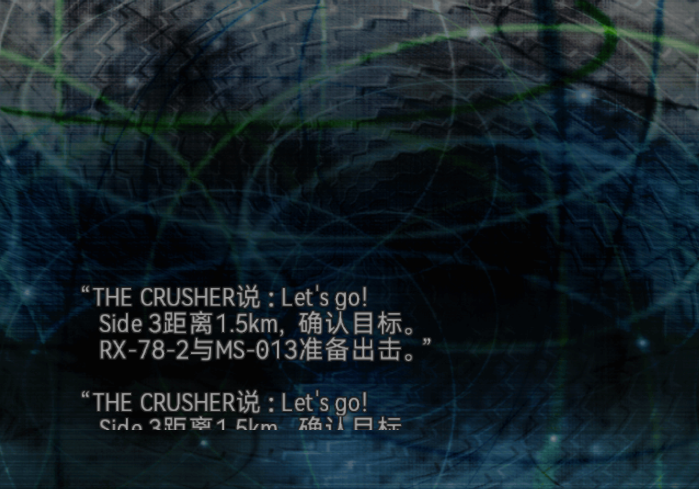
“0123456789、12.5毫米CIWS。 AaBbXYZxyz与Hgypqj，确认？ （上、下）【出击】《记录》……” “0123456789、12.5毫米CIWS。 AaBbXYZxyz与Hgypqj，确认？ （上、下）【出击】《记录》……” “0123456789、12.5毫米CIWS。 AaBbXYZxyz与Hgypqj，确认？ （上、下）【出击】《记录》……” “0123456789、12.5毫米CIWS。 AaBbXYZxyz与Hgypqj，确认？ （上、下）【出击】《记录》……”
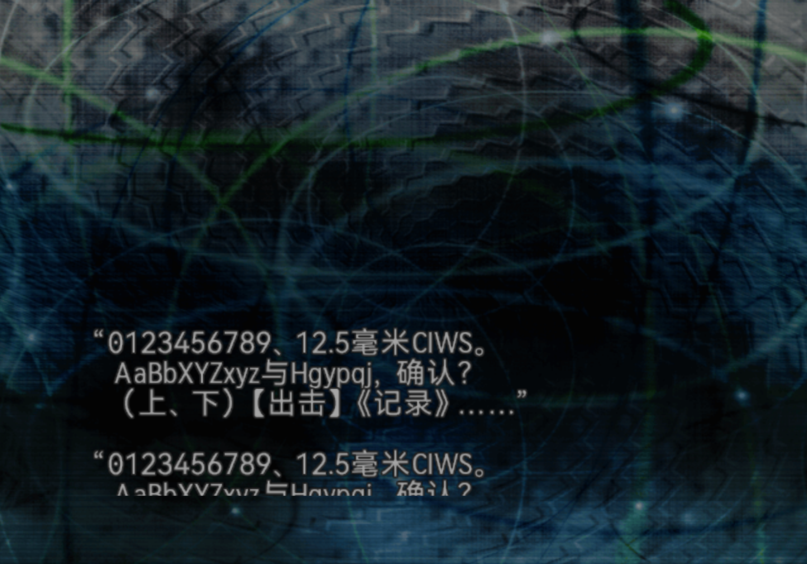
这场战斗是黑历史的重演吗我们还有希望在前方 天历吗说距离一二三上下大小口日月田由甲申中 这场战斗是黑历史的重演吗我们还有希望在前方 这场战斗是黑历史的重演吗我们还有希望在前方 天历吗说距离一二三上下大小口日月田由甲申中 这场战斗是黑历史的重演吗我们还有希望在前方 这场战斗是黑历史的重演吗我们还有希望在前方 天历吗说距离一二三上下大小口日月田由甲申中 这场战斗是黑历史的重演吗我们还有希望在前方 这场战斗是黑历史的重演吗我们还有希望在前方 天历吗说距离一二三上下大小口日月田由甲申中 这场战斗是黑历史的重演吗我们还有希望在前方
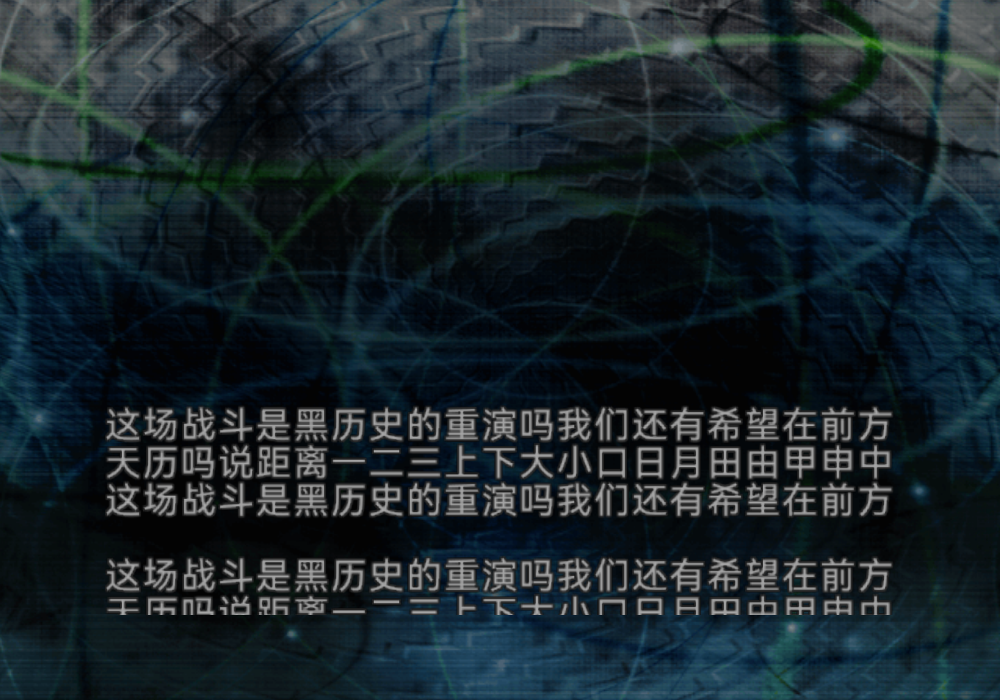
新地球联邦将生活在宇宙中的人类视为敌人，宣 布对PLANT与月之民采取敌对立场。PLANT与 月之民起初都希望通过对话解决问题，但面对新联 邦军的进攻，最终不得不还击。 0123456789、12.5毫米CIWS与RX-78， AaBbXYZxyz与Hgypqj，前往Side 3。 新地球联邦将生活在宇宙中的人类视为敌人，宣 布对PLANT与月之民采取敌对立场。PLANT与 月之民起初都希望通过对话解决问题，但面对新联 邦军的进攻，最终不得不还击。 0123456789、12.5毫米CIWS与RX-78， AaBbXYZxyz与Hgypqj，前往Side 3。 新地球联邦将生活在宇宙中的人类视为敌人，宣 布对PLANT与月之民采取敌对立场。PLANT与 月之民起初都希望通过对话解决问题，但面对新联 邦军的进攻，最终不得不还击。 0123456789、12.5毫米CIWS与RX-78， AaBbXYZxyz与Hgypqj，前往Side 3。
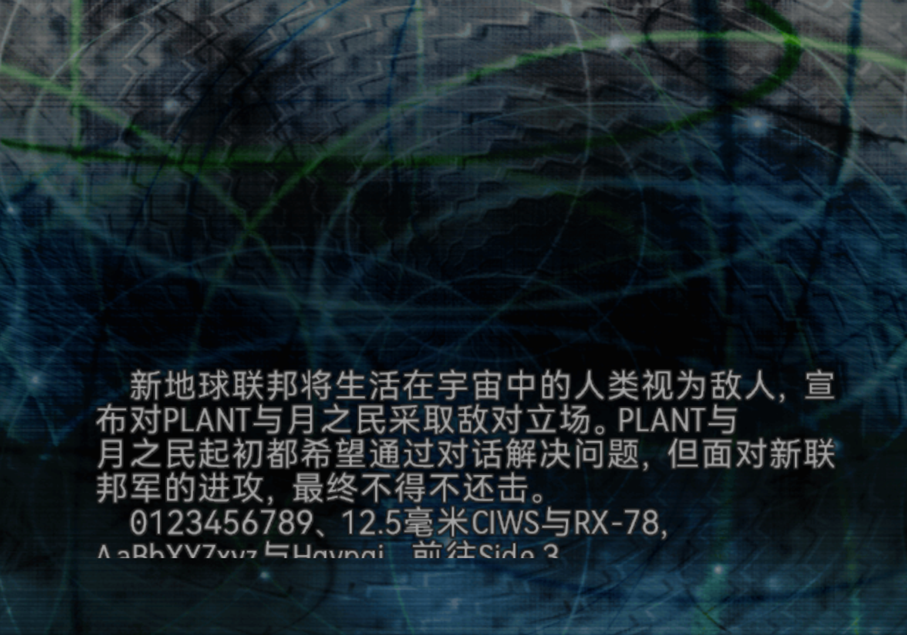